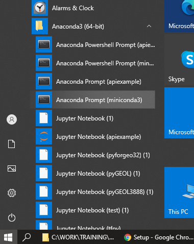
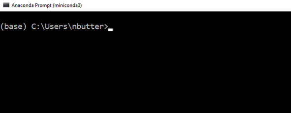
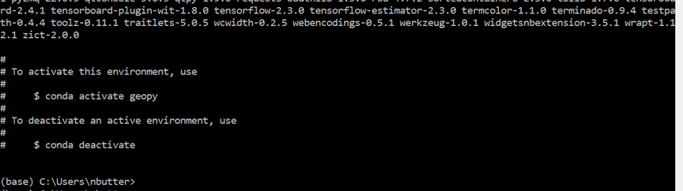

Setup
1. Get a Python client
We generally use and recommend the Miniconda Python distribution: https://docs.conda.io/en/latest/miniconda.html. But feel free to use whatever one works for you (and the course materials). We will be using Miniconda3-py39_4.11.0.
You can get this specific version here for:
Follow the prompts (the default recommendations in the installer are generally fine.) Once installed, launch an “Anaconda Prompt” from the Start Menu / Applications Folder to begin your Python adventure.

2. Setup your Python environment (install required packages and libraries)
Next we need to set up an environment with all the additional packages and libraries we will be using throughout the course.
- Download the Python environment file. This is a small text file, you may have to “Right Click > Save link as…” to download it.
- Launch an Anaconda Prompt (miniconda3).

- Assuming you have downloaded the environment.yml file to your Downloads folder. Type in the below command on a Windows machine at the prompt. This should take about 15 minutes to download (~1GB of data) and install the environment packages:
conda env create -n geopy -f C:\Users\nbutter\Downloads\environment.yml
If you are working on a Mac or Linux machine, the following is equivalent:
conda env create -n geopy -f ~/Downloads/environment.ymlUpon successful completion the command prompt should look like this:

After the installation completes, activate the new environment with the following command:
conda activate geopyAt anytime in the future you can install additional packages or create separate environments. We will discuss this more in the course. This particular environment should have the correct balance of versions with any dependencies accounted for.
Also, setup your workspace where we will be creating files and generating data, you can do this in your prompt (or just in Windows Explorer/OSX Finder). For me I will be working in top-level folder on my Desktop called geopython and a subdirectory called notebooks.
cd C:\Users\nbutter\Desktop\
mkdir geopython
cd geopython
mkdir notebooks
Launching the Jupyter/Python Notebook
Now you have built your environment with all the packages we need, you can launch it. We will be working mostly with Python Notebooks to run Python (as opposed to running an interpreter on the command line/prompt). Each time you restart your work you will have to follow these steps:
- Launch an Anaconda Prompt (or equivalent).
- Change directories to your workspace.
- Activate the
geopyenvironment. - Launch the Jupyter/Python Notebook server.
cd C:\Users\nbutter\Desktop\geopython
conda activate geopy
jupyter notebook
This will launch the Notebook server (and may automatically launch a web-browser and take you to the page). If the Notebook does not automatically start, copy the generated link into a browser.

3. Download the data
Download the data (380 MB inflated to 1 GB) for all the exercises from here:
https://cloudstor.aarnet.edu.au/plus/s/8Nt6BduWy4HkaZH/download
Extract this to a directory you can work in. Your file tree should look like something like this

.
|-- geopython
| +-- notebooks
| +-- data
| | +-- ...Alternative Python Environment Options
Jupyter Hub in the Cloud
If the above options do not work for you, you can use an on-demand cloud instance. You will be given a web link, login with provided credentials. Done.
Docker
If you are familiar with Docker you may use our Docker image with something like:
sudo docker run -it -p 8888:8888 nbutter/geopy:pesa2022 /bin/bash -c "jupyter notebook --allow-root --ip=0.0.0.0 --no-browser"This will launch the Python notebook server in the /notebooks folder. Access the notebook by entering the generated link in a web-browser, e.g. http://127.0.0.1:8888/?token=9b16287ab91dc69d6b265e6c9c31a49586a35291bb20d0ab
All materials copyright Sydney Informatics Hub, University of Sydney